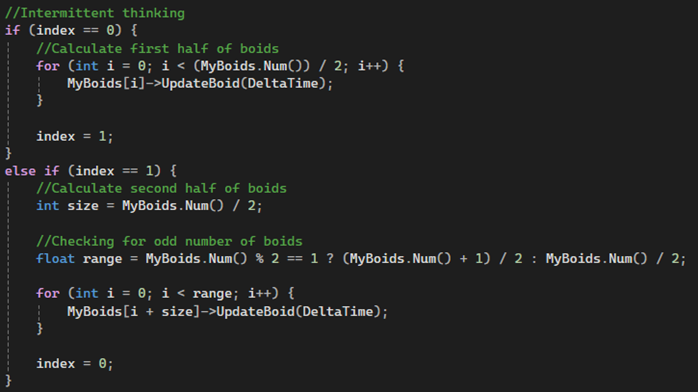
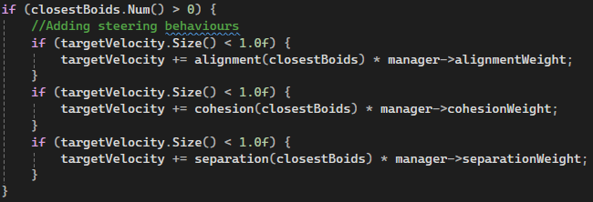
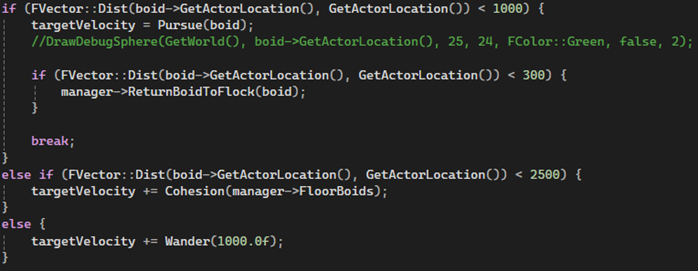
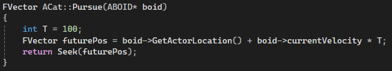

This project features a large collection of agents with steering and flocking behaviours, that can be affected at runtime. It also features a predator/prey style demonstration.
This project taught me a lot about debugging and optimisation, as part of my submission I had to complete a professional code report including unit tests of any optimisations I made and also a peer code review. The project necessitates a strong understanding and implementation of optimisations so that there can be more agents in the simulation at one time.
One of the biggest optimisations I made was intermittent thinking, this means that each agent was only calculating veloicty and moving every other frame as opposed to every fram. I accomplished this by halving the array of boids, looping through the first half on one frame and the second half on the next.
The project scene is full of BOID agents each with steering and flocking behaviours that influence its movement. The three flocking behaviours are built from the steering behaviours and are added to each agents velocity via a weighting system. This means if one weighting is higher than another, its movement will be influenced by that behaviour more.
There is UI in the scene which allows the user to change values during runtime, you can change each of the weightings. You can also change how many agents to spawn and can alter the size of the boundary that they are contained to.
The three flocking behaviours are:
Separation calculates the average location of all the surrounding agents, it then flees away from that location.
Cohesion calculates the average location of all the surrounding agents, it then seeks toward that location.
Alignment calculates the average direction of the surrounding agents, and moves the pigeon in that direction.
Occasionally, some pigeons will fly down to the ground to start wandering around and eating breadcrumbs. There is also a cat on the ground. If the cat is within a certain distance of a group of pigeons, it will use a similar equation to cohesion to go to the average location of the pigeons. Once it is close enough to a pigeon, it will start to pursue after it.
The pursue function works by taking the pigeons velocity and predicting where it will be, it then seeks to this location.
